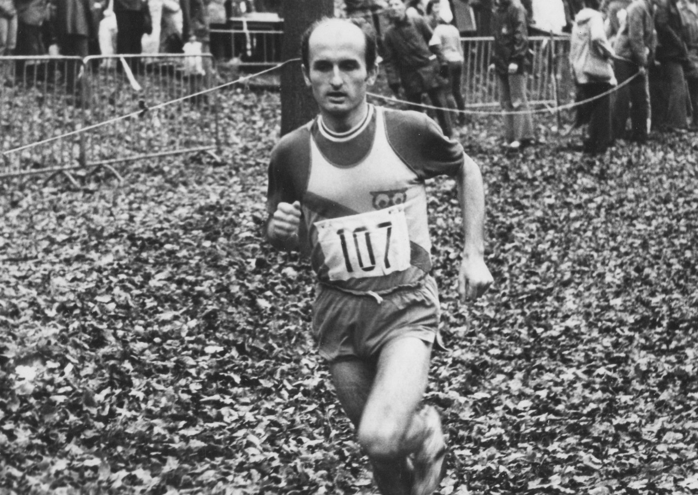
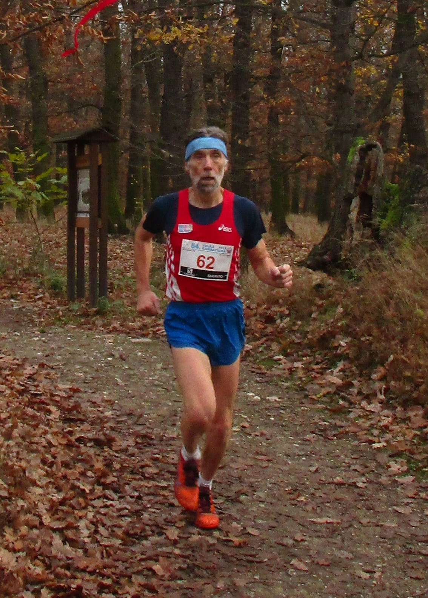

Veterán
Velké kunratické
Časopis určený veteránkám,
veteránům a všem příznivcům
legendárního závodu
Číslo: 3
listopad 2022

Legendy Velké kunratické. Jistě mi dáte za pravdu, že k následujícím řádkům jsme těžko mohli dát vhodnější titulek. Hodil by se již v minulém čísle, když jsme v časopise Veterán VK představili rekordmany v počtu startů mužů i žen Pepu Vonáška a Slávku Ročňákovou. Dnes představíme další dva rekordmany – Vlastíka Zwiefelhofera a Miloše Smrčku. První z nich kraloval Velké kunratické v 70. a 80. letech, Miloše dosud potkáváme na startu a už celé čtvrtstoletí patří ke hvězdám veteránské kategorie. FOTO: Vladimír Podroužek (1977)
Vlastík Zwiefelhofer – nepřekonaný král Velké kunratické
Ačkoli dlouhá léta už nezávodí, jméno Vlastimila Zwiefelhofera je stále mezi atlety pojmem. Vlastíka, jak ho atleti odnepaměti oslovují, si všichni pamatujeme jako vynikajícího běžce, jehož doménou byly krosy, mimo jiné i Velká kunratická, ale i jako rytíře běžeckých tratí, o čemž svědčí Cena fair play UNESCO z roku 1981. Přestože není veteránem Velké kunratické v pravém slova smyslu (nemá 20 absolvovaných startů), do její historie se zapsal jako málokdo jiný: v hlavní kategorii startoval celkem devětkrát a pokaždé vyhrál, navíc jeho traťový rekord 10:58,9 z roku 1979 už více než čtyři desetiletí odolává všem snahám o jeho překonání.
Letošní 89. ročník VK se poběží 13. listopadu, týden poté oslaví Vlastík 70. narozeniny. Jsem velmi rád, že při té příležitosti Vlastík odpověděl na několik otázek pro náš časopis. Těch otázek je devět, právě tolik, kolikrát v Kunraticích proběhl vítězně cílem.
1/ Prozraď čtenářům něco o sobě: odkud jsi, kde žiješ, co rodina, kde jsi pracoval (pracuješ) a čím se v životě zabýváš, kdy a jak ses dostal ke sportu.
Celý život jsem prožil v Tajanově, malé vesnici, kterou na východě od Klatov odděluje jen řeka Úhlava a na západě se krajina zvedá do lesů Chudenické vrchoviny. Při řece je pás luk a mezi loukami a lesem je pruh polí. Takže od dětství jsem měl pestrý výběr činností pro volné chvíle i drobné povinnosti od rodičů. Ve vsi jsme byli téměř všichni kluci sportovně laděni, takže jsme zkoušeli všechny možné sporty od šachů přes potápění, lyžování, atletiku, lezení po skalách, lukostřelbu až po kolektivní hry. V autobuse do školy občas starší kamarádi domluvili se sousední vsí „mistrák“ a v neděli jsme odehráli hokejový nebo fotbalový zápas. Ve škole jsem měl štěstí na dobré učitele a ti se mě nebáli poslat na meziškolní soutěže. Na opravdové závody jsem se poprvé dostal v 5. třídě, byl to přespolní běh na 300 metrů.
V Tajanově jsem nebyl jedině při studiích, kdy jsem byl přes týden v Plzni na internátu (SPŠE) a potom na koleji během studia PF, ale každé volno jsem jezdil domů. Ve třiceti letech jsem se oženil, po třech letech jsme začali stavět a s pomocí příbuzných, kamarádů a známých se nám podařilo postavit domek cca 400 m od rodičů. Máme tři děti – dceru a dva syny. Všichni si vyzkoušeli různé sportovní aktivity (hlavně kluci dělali atletiku, vodní sporty, hokej, létání, motorismus a já ani nevím co ještě), ale vrcholově se do ničeho nepustili.
Zaměstnán jsem byl hlavně ve školství (na katedře tělesné výchovy Pedagogické fakulty v Plzni, od roku 2002 učitel na ZŠ v Klatovech). Před „velkým třeskem“ jsem působení na PF přerušil a byl asi 3 roky v zemědělství (dělník na sušce a granulační lince). Teď jsem již několik let v důchodu, takže mám plno práce a nestíhám – je to hrozná honička. Kromě běžného chodu domácnosti pomáhám na hospodářství, odkud pochází manželka. Také máme kousek lesa i s kůrovcem – takže kácení, zpracování kmenů na malém katru, sázení a oplocování nových stromků, vyžínání… Občas potřebují pomoc „děti“. Prostě den je hrozně krátký. Ráno vstávám před 5. hodinou a večer se těším, až se srovnám v posteli (málokdy vydržím přes 22. hodinu). Někdy sice vstávám v noci – to když je třeba péci chleba, ale to je málokdy, snažím se, abych to stihl přes den nebo večer.
2/ Nemá asi smysl ptát se na Tvůj největší sportovní úspěch, jímž je bezesporu 6. místo z mistrovství světa v krosu z roku 1979. Kterých svých dalších výsledků si nejvíce ceníš?
Nedokážu říci, co je pro mne nejcennější. Těch závodů bylo hodně a na každém bylo něco cenného. Mistrovství republiky, světa, Evropy, Běchovice, Kunratice, Běh Rudého Práva, Mezinárodní závody Satus v Ženevě, vysokoškolské světové soutěže v Římě, v Lovani (Belgie), mezistátní utkání, cením si i závodů v Nasavrkách, Janovských 11 a 19 km, Silůvky u Brna, závody na Chodsku, v Klatovech…. Všude bylo něco k pěkného (závodní tratě, krajina, soupeři, kamarádi, ceny, nadšení a neúnavní pořadatelé…).
Musím přiznat, že na tom mém „největším úspěchu“ hrála velkou roli náhoda. Nebýt nočního deště a rozbahněné trati, určitě bych se tak vysoko neumístil a byl by to závod jako každý jiný s umístěním možná kolem 40. až 50. místa.
3/ Co pro tebe znamená Velká kunratická?
Teď je to trochu jiné než před 40 lety. Těším se, jestli v televizi nebo na fotce zahlédnu někoho ze známých a už necítím tu snahu se zúčastnit jako dříve, kdy to pro mne znamenalo konec závodního roku, začátek odpočinkového měsíce před začátkem přípravy na další sezonu a setkání s kamarády. Před pár lety tam běželi naši kluci, takže jsem si to při prohlídce trati opět „vychutnával“. Myslím, že atmosféra je pořád podobná a ten závodní duch je tam ve všech věkových skupinách cítit. Na trati každý závodí sám se sebou a je v napětí, jak asi běží ostatní. VK jsem měl rád také kvůli organizátorům Spartaku Praha 4, které jsem znal ze soustředění na Babyloně. Prostě to byl pro mne takový „sváteční“ závod.
4/ Kdy jsi běžel svou první Velkou kunratickou a jaké máš na ni vzpomínky?
Poprvé jsem tam byl jako dorostenec v roce 1969. Běželi jen polovinu tratě, z Hrádku rovnou do cíle. V deníku mám napsáno, že jsem se na Hrádku nemohl rozeběhnout. Celou trať jsem běžel až v roce 1974, tehdy mě překvapila obtížnost třetího kopce. Tam jsem byl už tuhý a moc jsem se musel nutit, aby se to znovu rozeběhlo.
5/ Připomeneš si nějaký ročník, který ti utkvěl nejvíc v paměti? Čím především?
Asi v roce 1980 jsem byl s rodiči na návštěvě u nejstaršího bratra na Slovensku. Bydlel na vesnici blízko Nitry. Domluvili jsme se, že tam odběhnu dva silniční závody. Ve čtvrtek v Nitře 5 km a v sobotu v Trnavě 8 km. Na obou jsem skončil 2. za Jozefem Lenčéšem. Z Trnavy jsme pak jeli rovnou do Prahy, kde jsem přespal u Petra Ondráška, a v neděli dopoledne jsem se klepal strachy, že to bude na Velké kunratické výbuch, protože jsem se necítil moc na závodění. Tenkrát jsem měl zase štěstí, protože bylo hodně bláta i vody a místy byl i sníh. Takže díky počasí se mi podařilo vyhrát, ale od začátku jsem běžel, co to šlo, protože jsem měl pocit, že jsem z těch silničních závodů zatuhlý.
6/ Víš o tom, že jsi obohatil terminologii Velké kunratické? („Na Hrádek neběhám, do Hrádku chvátám“). Objasnil bys to současným běžcům?
Když jsem v dětství někomu ze starších nestačil, neslýchal jsem „pospěš si“, ale „přichvátni si“. Takže chvátání je vlastně rychlá chůze nebo spíš spěch. Něco mezi během a chůzí. Hrádek jsem se snažil vyběhnout jen poprvé (v onom dorosteneckém startu v roce 1969). Stejně jsem ho celý nevyběhl a nahoře mě nohy vůbec neposlouchaly. Místo dopředu, se odrážely nahoru a ještě se při došlapu podlamovaly. Ztráta byla větší, než kdybych to pomalu vyšel. Navíc následoval po „houpačce“ seběh do cíle a tam jsem se na nohy také ještě nemohl spolehnout
7/ Naposled jsme Tě mohli v Kunraticích potkat při 82. ročníku v roce 2015 – během prodeje knížky o Tvé sportovní kariéře, kterou moc pěkně sepsal kolega běžec Jiří Šoptenko. Můžeme se těšit, že ještě někdy zavítáš do Kunratického lesa?
Zatím nic takového nechystám, ale třeba tam poběží někdo z dětí nebo vnoučat a možná mě vezmou s sebou.
8/ Kariéru vrcholového běžce jsi ukončil v roce 1982, přesto jsi i poté dokázal Velkou kunratickou ještě třikrát vyhrát. Udržuješ se i dnes v kondici rekreačním sportem? A dokázal bys odhadnout, v jakém čase bys nyní uběhl trať Velké kunratické?
Rekreační sport nedělám žádný. Rychlému chátrání se snažím zabránit prací na hospodářství nebo v lese. Když neřežu na katru dřevo, jezdím tam od jara do podzimu ráno a odpoledne na kole (denně cca 20 km). Každá cesta má převýšení cca 60 m. Myslím, že teď bych VK neuběhl. Byla by to spíš turistika.
9/ Jaké máš před sebou další výzvy, čeho bys chtěl ještě v životě dosáhnout, případně jaký sen by sis chtěl ještě v životě splnit?
Nic neplánuji. Snažím se starat o kozy, včely a nebýt na obtíž svému okolí. Když mohu, rád pomohu potřebným.
Miloš Smrčka – stálice veteránské kategorie
Miloš Smrčka (nar. 1954) je uznávaným premiantem veteránské kategorie, které kraluje už celé čtvrtstoletí. Vyhrál ji celkem třináctkrát, naposled v roce 2011 v konkurenci podstatně mladších soupeřů, k tomu přidal sedm druhých a jedno třetí místo. Milošův veteránský rekord 12:30,5 z roku 1996 se bude jeho následovníkům jen těžko překonávat. Jedním dechem dodáváme, že stejně neochvějně vládne v posledních letech tabulkám s kombinovaným hodnocením. Vytrvale se posouvá vzhůru startovní listinou, letos ho čeká již 47. start. A jen mimochodem – už léta dobíhá do cíle jako první, všechny své soupeře s nižšími startovními čísly předbíhá v první polovině trati. Dávno se zařadil mezi legendy Velké kunratické, přestože s běháním zdaleka nekončí.

Miloš Smrčka – dnes už legenda Velké kunratické (na trati v roce 2017)
Anketa pro Miloše Smrčku
1/ Prozraď v několika větách něco o sobě: odkud jsi, kde žiješ, co rodina, kde jsi pracoval (pracuješ) a čím se v životě zabýváš, kdy a jak ses dostal ke sportu.
Narodil jsem se v Praze, konkrétně Na Kampě. Tam jsem také absolvoval svůj první závod, na tříkolkách. Bylo mi 5 let. Brzy jsme se ale přestěhovali do Strašnic. V mládí jsem chodil cvičit do Sokola (tehdy ZRTV), kde jsem získal základy všeobecné obratnosti. V posledním roce střední školy jsem začal s atletickým tréninkem na Slavii pod vedením pana Květa. Po vojně jsem se přestěhoval do Říčan a zde bydlím stále. Po přestěhování jsem s tréninkem na Slavii skončil a běhám v lesích v okolí Říčan. V posledním ročníku na VŠ jsem se oženil, žena Jitka mě v běhání zprvu velmi podporovala, sama také závodně běhala. Nyní mě už jen nebrání.
Po vojně jsem pracoval ve výzkumném ústavu, „zkoumal jsem železnici“. Po revoluci jsem změnil profesi a pracoval jako technik v polygrafii. Nyní jsem již tři roky spokojený důchodce.
2/ Kam až jsi to ve sportu dotáhl a co považuješ za své největší sportovní úspěchy, případně kterých svých výkonů si nejvíce ceníš – v mládí a nyní?
Nikdy jsem ve sportu neměl žádné přehnané ambice. Sport jsem od začátku bral jako koníček. Na atletickém oválu jsem to dotáhl na 2. VT (800 m 1:55,6). Po přestěhování a běhání v lesích jsem začal běhat i delší tratě. První maraton jsem běžel ale až po dvaceti letech běhání, osobák mám 2:27:54. Ale běhal jsem závody všech délek od Velké kunratické až po ten maraton. Ve veteránském věku jsem se několikrát zúčastnil světových veteránských mistrovství. Byl jsem 2x druhý na silnici na 20 km (Kanada, Španělsko) a 5x mistrem světa v běhu do vrchu a jednou na Evropě, v Janských lázních. Ale můj úplně první běžecký závod byla Velká kunratická, kterou běhám jen s jedním vynecháním stále. Dříve jsem běhal hodně všech možných závodů, silniční i přespoláky. V současné době na mě doléhají častá sportovní zranění, takže už to není tak horké.
3/ Co pro tebe znamená Velká kunratická?
Jak jsem napsal výše, byl to můj absolutně první běžecký závod a hned za dospělé. Mám již přes 45 ročníků. Ale vlastně to ani nepovažuji za běžecký závod, spíš za běžecký svátek, který jsem nevynechal ani když jsem měl horečku a ihned po doběhu jsem plynule pokračoval ke zdravotníkům pro acylpyrin. Jedině když jsem byl rok na vojně, jsem vynechal, armáda mě nepustila.
4/ Kdy jsi běžel svou první Velkou kunratickou a jaké máš na ni vzpomínky?
Prvně jsem VK běžel v 19 letech, a to už je dost dávno. Je to jediný závod, který běhám pravidelně, bez přerušení (s výše uvedenou výjimkou). Atmosféra je neopakovatelná.
5/ Připomeneš si nějaký ročník, který ti utkvěl nejvíc v paměti? Čím především?
Nejlepší čas mám z ročníku 1989 a to 11:52,2, bylo to celkově 4. místo, v kategorii 30-39 let první. Na tento ročník mám ještě jednu neopakovatelnou vzpomínku. V seběhu z Hrádku těsně před potokem býval velký pařez. Při seskoku okolo tohoto pařezu se mi vyzula pata u tretry. Hned jsem ji nazul zpátky, ale byl jsem tak hodně rozhozený a naštvaný, že jsem o to víc makal a byl z toho myslím dost dobrý osobák.
6/ Tvé současné běžecké výkony jsou stále obdivuhodné. Prozraď svůj recept, jakou máš životosprávu, jak trénuješ a jak se připravuješ na závody.
Už jsem to také několikrát sděloval, že moje životospráva neodpovídá většinově vžitým poučkám a doporučením výživových specialistů a jim podobným. Moje denní jídlo je charakteristické úplně opačným přístupem. Ráno piji jen „medovou vodu“ (čaj s medem bez čaje), v poledne doma upečený speciální chléb bez ničeho, zapíjím většinou rakytníkovou šťávou, odpoledne „čokotime“, což je půllitr čokolády. K večeři porce za tři normální porce. Masa moc nejím, spíš těstoviny, luštěniny, toasty, jogurty s domácím ovocem apod.
Přípravy na závody mám také vychytané: dva dny před závodem mám k večeři tři hluboké talíře rýžové kaše posypané kakaem, večer před závodem těstoviny – 40 dkg špaget s 30 dkg ementálu. Ráno v den závodu jen osvědčenou medovou vodu, pokud je závod delší než 15 km, tak před závodem ještě banán. Před startem 2 deci coly. Při závodě nikdy nemám hlaďák.
7/ Jaké máš před sebou další výzvy, čeho bys chtěl ještě (ve sportu i v životě) dosáhnout, případně jaký sen by sis chtěl ještě v životě splnit?
Hlavně bych se chtěl udržet co nejdéle aktivní jak ve sportu, tak i v osobním životě. Myslím, že v běhu už jsem něco dosáhl a už nemám zapotřebí nikomu nic dokazovat. Stále mám chuť závodit, ale často mě sráží různá zranění a je čím dál tím těžší se vrátit do alespoň nějakého výkonu.
Číslo ve znamení statistik
První dvě čísla Veterána VK jsme z velké části věnovali statistikám, a bude tomu tak i tentokrát. V tomto čísle jsme kromě tradičního ohlédnutí za některými historickými ročníky připravili zajímavé porovnání výkonů, kterých dosáhli veteráni a veteráni v posledních třech letech, s výkony starými 10 a 20 let. Věřím, že to ocení zejména ti z vás, kteří se rádi probírají statistikami, tabulkami a starými výsledky. V našem přehledu se najde úplně každý, kdo se druhou listopadovou neděli postaví na start, a bude si moci zavzpomínat, jak mu to běhalo, když byl o generaci mladší…
Snad vás zaujme i tabulka veteránů z roku 1970, kdy probíhaly první pokusy o srovnání výsledků běžců různého stáří. Předchůdcem současného kombinovaného hodnocení byl tzv. trojboj, v němž se hodnotil výkon, věk a počet absolvovaných startů. Zajímavé je srovnání této „trojkombinace“ s výsledky sestavenými podle současných pravidel, které se významně liší.
Poslední statistika se týká veteránů, kteří absolvovali trať VK nejméně 50krát. Můžete porovnat, jakých výkonů dosáhli při svém 40., 50. a výjimečně i 60. startu. Podobné srovnání příště uděláme u veteránek, kde se k hranici 50 startů blíží pouze Slávka Ročňáková, proto u žen snížíme hranici absolvovaných startů na 30. Příjemné čtení!
Rok 1936 – 3. Velká kunratická
Třetí ročník Velké kunratické se konal třetí listopadovou neděli roku 1936 a přinesl rekordní účast 41 závodníků, pochopitelně v jediné mužské kategorii. Toto „rekordní číslo“ dnes může vzbuzovat úsměv, ale překonáno bylo až při válečném 10. ročníku v roce 1943. Dnes můžeme jen spekulovat, zda za vyšší účastí v roce 1936 hrál roli zvýšený zájem o sport díky nedávno skončené olympiádě v Berlíně. Vítězem se stal Stanislav Otáhal, účastník berlínské olympiády (startoval v běhu na 800 metrů), jehož vzpomínky na nejstarší ročníky Velké kunratické jste si mohli přečíst v prvním čísle Veterána VK. Na druhém místě skončil Obešlo a na třetím Bloman. Pro Jaroslava Obešla to bylo už třetí umístění na pomyslných stupních vítězů, ale jeho slavné chvíle ve Velké kunratické měly teprve přijít. A na závěr dotaz, směřující k současnému veteránu Antonínu Blomannovi (nar. 1949, 47 startů): V roce 1936 skončil na 3. místě závodník Bloman (ve výsledcích je psán s jedním n) – nejde o vašeho otce či příbuzného?
Výsledky opět přepisujeme z historického „pergamenu“, na němž jsou zaznamenány výkony všech účastníků prvních deseti ročníků. Jména závodníků ze starých výsledkových listin jsou vzpomínkou na zakladatele našeho závodu a neměla by upadnout v zapomnění.
VYČTENO Z VÝSLEDKŮ 3. ROČNÍKU 1936
| 1. Otáhal | 13:35 | 4. Vondřejc | 14:31,8 | 7. Schwär | 15:14,4 |
| 2. Obešlo | 14:18 | 5. Moc | 14:47,6 | 8. Parna | 15:30,7 |
| 3. Bloman | 14:29 | 6. Štorkán | 14:47,6 | 9. Pergl | 15:37 |
Rok 1970 – 37. Velká kunratická
Počasí, účast a výsledky
Tentokrát se v úvodu omezíme na konstatování, že běžci se probudili do chladného rána (1°C až 4,8°C) a museli se vyrovnat s nepříjemným deštěm. Vítězem se stal rekordman Balšánek časem 11:52, druhý Štěpánek a třetí Tempír za ním zaostali o jedinou vteřinu, což učinilo 37. ročník Velké kunratické nejvyrovnanějším v dosavadní historii. Kategorii žen vyhrála M. Hrstková (4:31,0). S veteránskou kategorií jsme si tentokrát pohráli a výsledky našeho zkoumání si můžete prohlédnout v následujících podrobných tabulkách.
VYČTENO Z VÝSLEDKŮ 37. ROČNÍKU 1970
VK 1970 – veteráni (26 start.) Kombinace – trojboj (čas, starty, věk)
1. Jiří Novák-Johny (1922) 16:14,0 1. Jaroslav Obešlo (1913) 6 2 12 20
2. František Chaluš (1930) 16:26,0 2. Jiří Kabátník (1905) 17 1 2 20
3. Stanislav Otáhal (1913) 16:44,4 3. Karel Kněnický (1908) 10 6 5 21
4. Karel Malý (1916) 17:06,4 4. Karel Malý (1916) 4 7 15 26
5. Ladislav Skála (1908) 17:18,2 5. Alois Kreuzer (1909) 16 3 7 26
6. Jaroslav Obešlo (1913) 18:00,2 6. Stanislav Otáhal (1913) 3 10 14 27
7. Přemysl Novotný (1918) 18:34,8 7. Antonín Štorkán (1913) 9 5 13 27
8. František Čech (1918) 18:44,2 8. Václav Barcal (1907) 11 14 3 28
9. Antonín Štorkán (1913) 19:00,6 9. Jiří Novák-Johny (1922) 1 9 20 30
10. Karel Kněnický (1908) 19:08,0 10. Přemysl Novotný (1918) 7 7 17 31
Vysvětlující text k veteránskému trojboji, který je uveden ve veteránských výsledcích:
„Jako měřítko výkonu veteránů nestačí čas, který snad dokonce není nejdůležitější jeho složkou. Proto sestavujeme již podruhé pořadí trojboje veteránů Velké kunratické. Sestává z těchto disciplín: 1/ Dosažený čas, neboť přesto, že běháme už dlouho, běháme pořád nejrychleji, jak umíme. 2/ Počet startů ve Velké kunratické jako ocenění dlouholeté věrnosti závodu a aktivnímu sportování. 3/ Datum narození k vyjádření hodnoty nástupu k závodu i tréningu, ačkoliv nám plynoucí čas přináší stále více lákavých výmluv.“
V každé z uvedených tří disciplín trojboje bylo určeno pořadí a součet těchto pořadí rozhodl o konečném výsledku.
Dodatečné poznámky redakce VVK
1/ Jiřímu Kabátníkovi byly započteny čtyři účasti z let 1949 až 1952, která jako jedna z mnoha obětí tehdejšího režimu strávil nespravedlivě ve vězení. V současných statistikách již tyto starty započítány nejsou.
2/ O tom, co rozhodovalo v případě bodové rovnosti, jsme se v dobových dokumentech nedočetli. Podle výsledků lze předpokládat, že v tomto případě rozhodoval dosažný čas.
3/ Při podrobném prostudování výsledků trojboje zjistíme, že o vítězi rozhodl jediný den v datu narození: Jaroslav Obešlo se narodil 2.1.1913, Antonín Štokrán o den později 3.1.1913. Kdyby to bylo obráceně, vítězem trojboje by se stal Jiří Kabátník.
4/ Je zřejmé, že „trojkombinace“ velmi zvýhodňovala běžce starších ročníků, kteří získávali body za věk vlastně dvakrát, protože většina z nich měla kromě vyššího věku logicky také větší počet startů. Proto se od roku 1972 změnil veteránský trojboj na dvojboj (výkon / věk), který se nejprve hodnotil prostým součtem pořadí, od roku 1980 pak procentuálním hodnocením, které se používá dodnes.
5/ V každém případě je kombinované hodnocení především hrou s čísly (přiznejme, někdy hrou velmi zajímavou) a výsledky se liší, často dost výrazně, podle toho, pro jakou jsme se rozhodli metodiku zpracování výsledků. Velmi zajímavé je porovnání „trojkombinace“ z roku 1970 s dodatečně vytvořenou tabulkou podle současných pravidel. Oba výsledky se liší, a to velmi výrazně. Vítěz Obešlo by skončil až pátý, druhý Kabátník dokonce osmý. Naopak vítězem kombinace by se podle současných pravidel stal Ladislav Skála (v trojkombinaci 1970 byl až 12.), na 2. místě by skončil Stanislav Otáhal (v trojkombinaci 6.) a na 3. místě Karel Kněnický (světe, div se, 3. místo mu patřilo i v trojboji 1970, byť za jinými soupeři).
6/ Jsme si vědomi, že impulsem k vytvoření veteránské kategorie nebylo soupeření, ale setkávání. Proto berte tuto naši hru s čísly a výsledky především jako vzpomínku na veterány z roku 1970, kteří si, bohužel, tyto řádky už nepřečtou…
Dodatečně vytvořená a poprvé publikovaná tabulka „výkon / věk“ 1970
(vzpomínka na zakladatele veteránské kategorie)
| Poř. + jméno | Čas | Poř. Body | Dat.nar. Poř. | Body | Celk.b. Startů 3boj |
1 Ladislav Skála 17:18,2 5 115,81 22.09.08 6 113,22 229,03 20 34 /12.
2 Stanislav Otáhal 16:44,4 3 118,55 30.12.13 14 103,62 222,17 27 27 / 6.
3 Karel Kněnický 19:08,0 10 106,91 30.03.08 5 114,10 221,01 31 21 / 3.
4 Václav Barcal 19:52,0 11 103,34 08.08.07 3 115,27 218,61 23 28 / 8.
5 Jaroslav Obešlo 18:00,2 6 112,41 02.01.13 12 105,42 217,83 35 20 / 1.
6 Karel Malý 17:06,4 4 116,77 10.01.16 15 99,92 216,69 30 26 / 4.
7 Antonín Štorkán 19:00,6 9 107,51 03.01.13 13 105,42 212,93 32 27 / 7.
8 Jiří Kabátník 21:55,0 17 93,37 09.11.05 2 118,45 211,82 36★ 20 / 2.
9 Alois Kreuzer 20:52,0 16 98,48 03.11.09 7 111,19 209,67 34 26 / 5.
10 Jiří Novák-Johny 16:14,0 1 121,02 06.12.22 20 87,34 208,36 28 30 / 9.
11 František Čech 18:44,2 8 108,84 30.08.16 16 98,76 207,60 20 47 /17.
12 Přemysl Novotný 18:34,8 7 109,60 04.05.18 17 95,70 205,30 30 31 /10.
13 Zdeněk Sláma 22:52,0 22 88,74 08.11.09 8 111,17 199,91 20 53 /23.
14 Josef Moc 23:48,0 24 84,20 22.01.08 4 114,43 198,63 33 32 /11.
15 Klem. Kerssenbrock 22:11,7 18 92,01 30.05.12 11 106,51 198,52 24 42 /14.
16 Vladimír Ondrášek 22:47,4 21 89,12 05.03.11 10 108,76 197,88 25 43 /15.
17 Ludvík Schmid 23:20,2 23 85,65 25.09.10 9 109,56 195,21 22 49 /19.
19 Zbyněk Malý 19:58,6 12 102,81 06.06.20 18 91,89 194,70 20 53 /22.
18 Jaroslav Šilhavý 20:02,0 14 102,53 26.07.20 19 91,64 194,17 26 44 /16.
20 František Chaluš 16:26,0 2 120,05 23.10.30 26 72,98 193,03 21 48 /18.
21 Jiří Horáček 19:59,6 13 102,72 21.07.24 21 84,38 187,10 22 51 /20.
22 Jiří Novák-Dupavec 20:11,0 15 101,80 03.04.25 23 83,10 184,70 23 52 /21.
23 Jaroslav Bauer 30:43,0 26 50,55 22.05.04 1 121,13 171,68 23 41 /13.
24 Miloš Trůbl 22:47,2 20 89,13 13.12.25 24 81,83 170,96 21 64 /25.
25 Viktor Trkal 22:47,0 19 89,15 13.03.29 25 75,92 165,07 22 61 /24.
26 Jaroslav Urbánek 24:59,6 25 78,40 15.01.25 22 83,49 161,89 21 67 /26.
Průměry 1970 20:33,2 100,00 24.12.15 100,00 200,00
★ Jiřímu Kabátníkovi byly započteny 4 starty v letech 1949 – 1952.
Počty startů po 37. ročníku: 33+4 – Jiří Kabátník (viz pozn. výše), 36 – Jaroslav Obešlo, 35 – Alois Kreuzer, 34 – Moc, 33 – Štorkán, 32 – Kněnický, 31 – Malý, Novotný, 29 – Novák-Johny, 28 – Otáhal, 27 – Šilhavý, 26 – Junger, Ondrášek, 25 – Zoulek, Kerssenbrock, 24 – Barcal, Bauer, Čuhel, Novák-Dupavec, 23 – Horáček, Schmid, Trkal, 22 – Chaluš, Trůbl, Urbánek, Vondřejc, 21 – Čech, Malý, Skála, Sláma. Právo startu v kategorii VVK 1970 si vybojovalo 30 běžců, z nichž na start se postavilo 26. Chyběli pouze Junger, Zoulek, Čuhel a Vondřejc.
Ačkoli ve své době byli veteráni považováni za staré pány, jejich průměrný věk v roce 1970 byl necelých 55 let. Nejstarší Jaroslav Bauer měl pouhých 66 let, zatímco „junior-veterán“ František Chaluš jen těsně překročil čtyřicítku.
Startovní listina VVK 2022 s jejich výkony z let 2002 až 2021
| č. | Startů | 2002 | 2012 | 2019 | 2020 | 2021 | ||
| 1 | Vonášek Josef | 62 | 1937 | 22:14,1 | 24:37,0 | 42:44,8 | 40:57,3 | 42:13,9 |
| 2 | Šperling Ivan | 58 | 1941 | 18:43,5 | 21:40,5 | 27:29,7 | - | 29:23,1 |
| 3 | Pohorský Ivan | 56 | 1944 | 17:25,7 | 20:27,9 | 28:16,0 | 26:20,1 | 31:23,4 |
| 4 | Čech Karel | 56 | 1945 | 18:44,1 | 21:58,5 | 31:51,5 | 35:03,5 | 37:55,3 |
| 5 | Bednář Jaroslav | 55 | 1939 | 21:06,4 | 22:17,2 | 30:07,5 | 31:22,1 | 34:01,3 |
| 6 | Doleček František | 54 | 1943 | 20:50,6 | 27:43,6 | 42:47,5 | 43:26,4 | 50:36,5 |
| 7 | Sochor Milan | 54 | 1948 | 25:08,9 | 27:49,8 | 30:43,7 | 35:47,6 | 40:05,1 |
| 8 Sadil Zbyněk | 53 | 1942 | - | 23:43,9 | 29:20,2 | - | 35:39,9 | |
| 9 Babánek Karel | 53 | 1947 | 18:56,8 | 24:14,0 | 24:45,5 | 25:38,9 | 26:08,3 | |
| 10 Novotný Jan | 52 | 1945 | 20:48,9 | 22:00,1 | 28:15,4 | 25:52,2 | 27:31,9 | |
| 11 Klaus Jindřich | 51 | 1944 | 17:47,3 | 22:18,2 | - | - | 34:56,0 | |
| 12 Pasler Jiří | 51 | 1946 | - | 20:18,7 | 23:40,6 | 27:54,6 | 26:01,8 | |
| 13 Šimon Miloš | 50 | 1944 | 18:42,2 | 22:21,5 | 25:04,2 | 24:44,4 | 26:46,3 | |
| 14 Polák Pavel | 50 | 1946 | 19:10,9 | 18:56,8 | 21:06,0 | 21:36,3 | 23:51,8 | |
| 15 Klimánek Miloslav | 50 1947 | 20:16,1 | 22:01,5 | 28:10,8 | 30:17,3 | - | ||
| 16 Ezechiáš Michal | 50 | 1952 | 17:03,0 | 17:54,3 | 21:12,8 | 23:30,0 | 23:09,2 | |
| 17 Korb Eduard | 49 | 1940 | 20:40,1 | 24:33,9 | 29:40,1 | 33:56,0 | 32:15,0 | |
| 18 Javůrek Jaromír | 49 | 1941 | 21:36,3 | 25:28,1 | 35:42,4 | 33:23,5 | 33:41,8 | |
| 19 Matiášek Petr | 49 | 1946 | 16:17,9 | 17:30,3 | 23:23,3 | 22:15,0 | 23:16,6 | |
| 20 Drška Milan | 49 | 1951 | 18:00,7 | 21:10,8 | 24:47,3 | 27:21.0 | 26:08,7 | |
| 21 Sysel Zdeněk | 49 | 1952 | 18:09,4 | 22:28,8 | 23:34,2 | 27:07,7 | 24:41,9 | |
| 22 Sedlák Luděk | 49 | 1954 | 16:08,6 | 20:54,9 | 23:40,9 | 22:03,2 | 30:29,6 | |
| 23 Ulrich Josef | 48 | 1937 | 19:24,1 | 22:01,3 | 29:33,3 | 29:20,1 | 30:25,0 | |
| 24 Novák Pavel | 48 | 1948 | 24:36,3 | 33:40,5 | 43:42,5 | 42:32,4 | 42:54,1 | |
| 25 Laciga Zdeněk | 48 | 1952 | 14:35,5 | 16:29,1 | 17:47,9 | 18:49,5 | 21:34,6 | |
| 26 Poustecký Jan | 48 | 1954 | 27:09,9 | 23:39,0 | 25:01,3 | 26:28,0 | 28:06,1 | |
| 27 Blomann Antonín | 47 | 1949 | 20:34,2 | - | 44:49,7 | 47:33,2 | 48:59,1 | |
| 28 Novák Pavel | 47 | 1953 | 14:50,0 | 17:10,3 | 19:24,9 | 19:53,8 | 21:22,1 | |
| 29 Kočí Jiří | 47 | 1954 | 25:15,1 | 29:12,2 | 35:19,1 | 35:32,4 | 35:42,0 | |
| 30 Ge Evžen | 47 | 1954 | 17:54,6 | 19:03,1 | 29:53,8 | 29:15,4 | 38:46,1 | |
| 31 Moravec Karel | 46 | 1949 | 17:06,6 | 24:54,2 | 25:38,8 | 27:13,6 | - | |
| 32 Hejtmánek Jan | 46 | 1951 | 18:13,8 | 17:28,8 | 19:54,6 | 20:39,6 | 21:03,6 | |
| 33 Pícha Tomáš | 46 | 1952 | 18:30,2 | 22:12,3 | 25:59,9 | 30:04,4 | 30:02,5 | |
| 34 Pechek František | 46 | 1953 | 13:38,4 | 16:20,0 | 17:45,1 | 18:31,5 | 19:40,3 | |
| 35 Smrčka Miloš | 46 | 1954 | 13:34,0 | 14:31,4 | 14:54,3 | 17:24,2 | 15:54,8 | |
| 36 Podroužek Vladimír | 46 | 1955 | 16:46,3 | 18:44,8 | 20:19,8 | 22:00,6 | 23:23,7 | |
| 37 Řehola Jiří | 46 | 1956 | 17:49,6 | 20:49,4 | 30:23,7 | 28:45,5 | 27:14,1 | |
| 38 Čenovský Jiří | 45 | 1949 | 19:45,4 | 41:58,1 | 34:36,7 | 36:01,5 | 37:02,4 | |
| 39 Kolský Alexander | 45 | 1950 | 20:58,8 | 23:23,6 | 27:04,5 | 28:20,3 | 29:14,0 | |
| 40 Růžička Milan | 45 | 1955 | 16:00,1 | 17:07,5 | 18:43,0 | 19:04,7 | 19:50,3 | |
| 41 Flašar Jan | 45 | 1957 | 18:26,4 | 18:23,8 | 39:56,5 | 27:57,2 | 26:19,8 | |
| 42 Řípa Milan | 44 1948 | - | 20:26,8 | 24:40,3 | 27:49,2 | - | ||
| 43 Eliáš Pavel | 44 | 1949 | 18:10,9 | 20:36,6 | - | 20:35,7 | 20:26,3 | |
| 44 Mlátek Antonín | 44 | 1949 | 19:39,9 | 22:18,5 | 26:51,2 | - | 31:01,0 | |
| 45 Kučera Lubomír | 44 | 1953 | 21:53,9 | 26:04,0 | 27:14,2 | 31:11,5 | 31:29,6 | |
| 46 Špičák Aleš | 44 | 1955 | 15:10,0 | 15:59,2 | 18:16,0 | 19:39,4 | 21:01,5 | |
| 47 Nohynek Stanislav | 44 | 1955 | 20:52,7 | 21:57,7 | 32:21,1 | 33:51,1 | 34:45,7 | |
| 48 Stejskal Petr | 44 | 1956 | 16:24,9 | 19:28,0 | 20:29,9 | 19:59,0 | 20:56,6 | |
| 49 Fišák Jan | 43 | 1944 | 19:05,5 | - | 25:43,5 | - | 28:22,1 | |
| 50 Buriánek Jaromír | 43 | 1947 | 18:02,2 | - | 22:41,1 | 23:34,8 | 23:46,9 | |
| 51 Bartoněk Vlastislav | 43 | 1948 | 19:59,9 | 27:54,3 | 28:16,0 | - | 31:13,3 | |
| 52 Okrouhlík Jiří | 43 | 1949 | 17:27,5 | 19:08,1 | 31:05,4 | - | 26:31,3 | |
| 53 Barták Jiří | 43 1951 | 17:23,1 | 21:32,3 | 24:06,6 | 26:34,6 | - | ||
| 54 Čížek Jaromír | 43 | 1951 | 21:01,9 | 28:59,4 | 27:37,3 | 35:42,8 | 39:49,4 | |
| 55 Rádl Pavel | 43 | 1956 | 15:51,5 | 17:41,9 | 20:03,2 | 20:26,8 | 21:24,8 | |
| 56 Fuka Jaroslav | 43 | 1956 | 18:50,8 | 21:07,2 | - | 22:21,7 | 22:00,5 | |
| 57 Řežábek Petr | 43 | 1957 | 16:30,9 | 23:48,8 | 26:47,9 | 30:39,1 | 33:10,1 | |
| 58 Snížek Jaromír | 42 | 1942 | 19:47,1 | 22:49,9 | 27:41,9 | 29:07,6 | 30:07,4 | |
| 59 Andres Miroslav | 42 | 1947 | - | 19:51,5 | 23:15,0 | 23:53,1 | 25:14,6 | |
| 60 Calta Karel | 42 | 1948 | 20:05,9 | 22:26,4 | 25:51,2 | 27:06,6 | 28:01,8 | |
| 61 Ovčinikov Milan | 42 | 1950 | 19:27,0 | 23:41,9 | 26:54,4 | 24:36,6 | 25:19,9 | |
| 62 Bednář Karel | 42 1955 | 16:21,3 | 18:09,3 | 21:12,4 | - | - | ||
| 63 Votava Radomil | 42 | 1958 | 19:35,3 | 21:09,9 | 24:56,7 | 23:05,1 | 26:25,6 | |
| 64 Přibyl Ivan | 42 | 1959 | 15:29,1 | 16:07,7 | 16:46,8 | 17:42,6 | 17:01,7 | |
| 65 Suchý Jiří | 42 | 1959 | 14:32,7 | 15:15,7 | 16:56,9 | 16:32,9 | 16:15,1 | |
| 66 Štěpán Josef | 41 | 1952 | 16:27,5 | 19:19,7 | 21:02,0 | - | 21:34,4 | |
| 67 Koubek Miroslav ml. | 41 | 1953 | 22:11,2 | 24:23,3 | 28:19,9 | 29:51,3 | 30:39,8 | |
| 68 Šachta Drahomír | 41 | 1953 | 18:32,1 | - | 22:17,5 | 23:09,6 | 24:29,2 | |
| 69 Lafek Petr | 41 | 1954 | 20:36,2 | 19:46,1 | 21:03,8 | 28:11,0 | 23:49,6 | |
| 70 Hudský Aleš | 41 | 1957 | 16:38,3 | 17:26,3 | 20:13,6 | 20:44,5 | 20:18,1 | |
| 71 Kudrnáč Martin | 41 | 1959 | 20:07,6 | - | 24:30,9 | 29:34,8 | 27:10,1 | |
| 72 Čermák Jaroslav | 40 | 1941 | 23:58,5 | - | 38:19,5 | 43:13,3 | 41:43,4 | |
| 73 Havlíček Vladimír | 40 | 1951 | 18:08,1 | 23:06,8 | 22:13,3 | 23:07,3 | 22:48,3 | |
| 74 Zajíc Zdeněk | 40 | 1953 | 17:26,8 | - | - | - | 24:06,0 | |
| 75 Dohnal David | 40 | 1955 | 17:18,9 | 18:21,9 | 21:36,2 | 20:58,6 | 21:39,0 | |
| 76 Novák Vladimír | 40 | 1956 | 16:59,8 | 21:22,5 | 25:14,5 | 26:23,8 | 26:51,9 | |
| 77 Adamík Miroslav | 40 | 1958 | 21:45,8 | 27:06,9 | 27:21,6 | - | 29:42,5 | |
| 78 Chvátal Vratislav | 40 | 1958 | 19:16,0 | 24:29,4 | 32:44,2 | 32:19,0 | 31:24,3 | |
| 79 Čokrt Václav | 40 | 1959 | 16:51,7 | 21:15,2 | 24:06,2 | 26:19,9 | 25:29,7 | |
| 80 Popel Karel | 40 | 1960 | 16:28,7 | 17:13,1 | 18:59,8 | 18:49,1 | 20:11,6 | |
| 81 Zeman Pavel | 39 | 1943 | 21:13,6 | 21:29,1 | 30:30,8 | 34:57,6 | 31:37,6 | |
| 82 Melzmuf Vladimír | 39 | 1946 | 23:03,9 | - | 29:39,8 | - | - | |
| 83 Tunkl Pavel | 39 | 1947 | 18:46,3 | 19:43,6 | 23:23,5 | 24:26,7 | 23:02,6 | |
| 84 Havlín Josef | 39 | 1947 | 19:35,2 | 29:54,0 | 24:00,3 | 25:24,2 | 26:45,1 | |
| 85 Pirk Jan | 39 | 1948 | 16:00,7 | 17:27,9 | 21:28,7 | 22:19,5 | 22:41,9 | |
| 86 Novák Jaroslav | 39 | 1950 | 17:14,3 | 20:33,2 | 23:10,7 | 23:41,6 | 22:46,1 | |
| 87 Werner Petr | 39 | 1951 | 16:44,2 | 17:59,4 | 24:02,8 | 24:02,3 | 23:57,2 | |
| 88 Dort Jiří | 39 | 1952 | 17:08,2 | 18:28,9 | 21:39,3 | 22:20,0 | 24:57,1 | |
| 89 Čejka Lubomír | 39 | 1952 | 17:53,0 | 19:13,2 | - | 25:49,6 | 25:45,6 | |
| 90 Kalný Vladimír | 39 | 1953 | 21:42,9 | 25:46,1 | 35:33,4 | - | - | |
| 91 Soviš Jan | 39 | 1955 | 16:39,1 | 19:00,6 | 26:28,2 | 27:47,9 | 31:39,9 | |
| 92 Krofta Jiří | 39 | 1955 | 18:18,7 | 20:38,0 | 25:27,9 | - | 25:49,9 | |
| 93 Hampl Petr | 39 | 1955 | 19:45,5 | 21:28,6 | 22:32,3 | 23:03,6 | 24:07,0 | |
| 94 Vaněk Miloš | 39 | 1958 | 18:55,9 | 21:01,6 | 23:46,5 | 23:35,8 | 22:54,7 | |
| 95 Novotný Jiří | 39 | 1960 | 14:13,2 | 15:59,3 | 18:18,9 | 17:33,8 | 18:17,7 | |
| 96 Bednářský Luboš | 39 | 1960 | 19:00,2 | 22:03,1 | 29:01,3 | 24:16,0 | 29:44,6 | |
| 97 Kefurt Pavel | 39 | 1961 | - | 22:19,4 | 28:02,9 | 30:14,1 | 33:06,3 | |
| 98 Jurák Jan | 38 | 1947 | 16:12,6 | 17:52,0 | 19:48,5 | - | - | |
| 99 Foltýn Ctirad | 38 | 1950 | 20:01,1 | 25:43,4 | 26:00,0 | 27:50,2 | 29:07,6 | |
| 100 Mikát Antonín | 38 | 1951 | 21:29,4 | 21:51,6 | 26:55,9 | 29:46,0 | 29:36,6 | |
| 101 Opolecký Hynek | 38 | 1954 | 18:31,1 | 19:41,1 | 23:41,0 | 25:44,8 | 24:14,5 | |
| 102 Čejka Václav | 38 | 1956 | 17:03,8 | 19:07,8 | 23:36,5 | 23:03,2 | 22:26,4 | |
| 103 Měchura František | 38 | 1956 | 16:50,9 | 20:35,4 | 25:36,3 | 25:14,9 | 25:24,5 | |
| 104 Libra Martin | 38 | 1957 | 19:55,7 | 22:06,1 | 23:43,1 | 26:11,8 | 26:11,5 | |
| 105 Pilát Luděk | 38 | 1958 | 22:50,0 | 23:38,9 | 27:46,8 | 28:38,0 | 29:25,6 | |
| 106 Jech Jaroslav | 38 | 1960 | 20:32,2 | 25:01,4 | 25:08,3 | 26:25,0 | 27:40,3 | |
| 107 Vyhnálek Karel | 37 1944 | 23:59,1 | - | 27:14,3 | - | - | ||
| 108 Pokorný Bohuslav | 37 1945 | 18:27,9 | 20:55,1 | 24:09,1 | 26:29,9 | - | ||
| 109 Havlín Jindřich | 37 | 1945 | 26:24,2 | 30:36,8 | 36:35,4 | 41:04,1 | 44:10,7 | |
| 110 Panský Václav | 37 | 1951 | 20:23,6 | 23:24,7 | 25:44,4 | 26:59,3 | 27:46,9 | |
| 111 Vaněk Vladimír | 37 | 1952 | 16:11,9 | 22:08,8 | 20:52,0 | 20:09,7 | 20:41,5 | |
| 112 Kyselý Pavel | 37 | 1952 | - | 20:26,6 | 25:37,1 | 26:09,1 | 26:31,0 | |
| 113 Nohava Jiří | 37 | 1953 | 15:29,3 | 19:50,4 | 22:35,0 | 18:41,2 | 18:15,2 | |
| 114 Jech Jan | 37 | 1955 | 16:25,3 | - | 21:53,9 | - | 21:24,8 | |
| 115 Veselý Otto | 37 | 1956 | 26:24,9 | 26:24,0 | 28:06,4 | 35:01,8 | 31:23,4 | |
| 116 Piš Milan | 37 | 1957 | 17:49,3 | 19:19,6 | 22:49,0 | 22:33,0 | 22:35,6 | |
| 117 Andrle Miroslav | 37 | 1958 | 17:27,5 | 19:34,6 | 21:59,1 | 23:20,0 | 24:06,4 | |
| 118 Píška Zdeněk | 37 | 1958 | 22:21,8 | 25:39,9 | 28:02,8 | 38:13,1 | 31:55,5 | |
| 119 Vajda Štefan | 37 | 1959 | 19:02,5 | 20:20,9 | 22:22:8 | 22:15,8 | 23:49,9 | |
| 120 Dvorský Jaroslav | 37 | 1961 | 14:25,3 | 16:19,2 | 18:36,0 | - | 19:15,7 | |
| 121 Mašek Roman | 37 | 1961 | 18:05,8 | 19:07,7 | 22:17,1 | 23:14,6 | 23:49,7 | |
| 122 Holub Jaroslav | 37 | 1962 | 16:15,8 | 17:29,9 | 18:59,8 | 18:43,3 | 18:16,2 | |
| 123 Diviš Martin | 37 | 1963 | 14:52,3 | 29:38,9 | 18:14,4 | 17:35,2 | 18:07,2 | |
| 124 Vonášek Luboš | 37 | 1965 | 16:10,3 | 22:26,8 | 17:43,9 | 18:02,3 | 19:43,3 | |
| 125 Škvor Petr | 37 | 1965 | 17:13,3 | 19:03,1 | 21:46,5 | - | 20:44,0 | |
| 126 Seeman Pavel | 37 | 1966 | 15:29,3 | 16:56,5 | 18:55,3 | 18:18,7 | 19:02,5 | |
| 127 Danda Josef | 36 | 1944 | 22:09,0 | 24:53,3 | 26:59,2 | 25:56,1 | - | |
| 128 Svoboda Zdeněk | 36 | 1947 | - | 23:24,5 | 28:08,6 | 29:45,2 | 31:32,1 | |
| 129 Janoušek Vladimír | 36 | 1949 | 19:36,7 | 25:57,3 | - | - | - | |
| 130 Berdich Jiří | 36 | 1951 | 20:29,3 | 18:43,6 | 24:11,1 | 24:43,7 | 23:58,3 | |
| 131 Opolecký Dalibor | 36 | 1952 | 17:58,3 | 19:41,0 | 22:29,4 | - | 27:53,8 | |
| 132 Stejskal Václav | 36 | 1955 | 19:41,6 | 21:47,0 | 22:41,7 | 24:42,8 | 23:47,7 | |
| 133 Svoboda Milan | 36 | 1956 | 16:55,3 | 18:57,0 | 21:34,3 | 22:52,8 | 23:28,1 | |
| 134 Ezechiáš Ivo | 36 | 1958 | 18:13,0 | 17:05,6 | 19:01,9 | 18:58,6 | 18:41,3 | |
| 135 Škop Zdeněk | 36 | 1958 | 16:59,0 | 18:41,5 | 19:43,5 | 20:52,9 | 21:39,5 | |
| 136 Koloc Pavel | 36 | 1965 | 18:37,9 | 24:45,6 | 28:54,3 | 32:11,8 | 31:22,6 | |
| 137 Chytil Ivan | 36 | 1965 | 20:12,3 | 21:30,4 | 24:33,9 | 24:27,6 | 24:35,7 | |
| 138 Šiml Jan | 36 | 1967 | 17:00,0 | 19:01,8 | 21:05,9 | 20:54,0 | 21:55,5 | |
| 139 Engliš Jiří | 35 | 1938 | 22:56,5 | 26:14,0 | 40:10,4 | - | DNF | |
| 140 Gregor Jaroslav | 35 | 1951 | 15:52,6 | 17:29,7 | 19:13,5 | 20:36,4 | 21:25,2 | |
| 141 Bříza Jiří | 35 | 1952 | - | 18:21,1 | - | 24:29,4 | 25:07,3 | |
| 142 Schreiber Pavel | 35 | 1958 | 22:49,4 | 24:48,4 | 34:19,2 | 34:07,4 | 34:46,6 | |
| 143 Bauer Michal | 35 1963 | 17:17,3 | - | 22:38,8 | 22:31,5 | - | ||
| 144 Háněl Jaromír | 35 | 1968 | 17:53,3 | 18:57,5 | 21:43,9 | 23:35,1 | 25:12,2 | |
| 145 Švihlík Martin | 35 | 1968 | 20:13,5 | 19:09,7 | 20:30,8 | 22:44,4 | 22:21,2 | |
| 146 Čech Jaroslav | 34 | 1941 | 15:38,9 | 17:45,0 | 26:05,5 | 28:09,0 | 27:52,0 | |
| 147 Schestauber Karel | 34 1951 | 18:50,6 | 19:43,2 | 24:13,8 | - | - | ||
| 148 Urban Josef | 34 | 1956 | 17:05,4 | 18:09,4 | 19:20,2 | 20:14,6 | 20:23,4 | |
| 149 Fojtík Zbyněk | 34 | 1959 | 17:39,3 | 21:39,5 | 19:52,6 | 21:49,1 | 21:40,6 | |
| 150 Matzner Martin | 34 | 1959 | 19:23,6 | 18:54,7 | - | 25:44,3 | 25:54,3 | |
| 151 Kulíšek Jiří | 34 | 1961 | 16:48,6 | 18:58,8 | 23:42,1 | 24:13,5 | 24:25,6 | |
| 152 Pilař Libor | 34 | 1961 | 19:57,8 | 21:56,1 | 23:30,6 | 23:41,4 | 23:47,7 | |
| 153 Smrček Jiří | 34 | 1964 | 19:37,8 | 21:30,0 | 25:09,2 | - | 25:00,9 | |
| 154 Zeman Jaroslav | 34 | 1968 | 20:47,7 | 22:14,4 | 23:03,4 | 25:33,5 | 27:19,9 | |
| 155 Seeman Tomáš | 34 | 1968 | 15:04,9 | 17:19,4 | 17:49,6 | 17:49,3 | 19:08,4 | |
| 156 Bajer Tomáš | 34 | 1968 | 24:54,0 | 21:15,1 | 27:57,2 | 26:19,8 | 29:18,6 | |
| 157 Seidl Zbyněk | 33 | 1943 | 21:47,9 | 24:41,4 | 29:24,1 | - | 30:54,5 | |
| 158 Adam Petr | 33 1950 | - | 17:10,0 | - | 21:35,5 | - | ||
| 159 Rosen Jan | 33 | 1952 | - | 19:39,3 | 24:52,3 | - | 25:38,8 | |
| 160 Zehringer Aleš | 33 1955 | 18:23,7 | 18:35,4 | 22:16,7 | 21:35,2 | - | ||
| 161 Cakl Alex | 33 | 1955 | - | 20:12,0 | 22:23,9 | 23:37,9 | 23:45,9 | |
| 162 Horáček Miroslav | 33 | 1957 | 22:38,6 | 29:43,9 | 27:47,7 | 31:11,7 | 32:02,2 | |
| 163 Roučka Jaroslav | 33 | 1963 | 16:48,5 | 15:47,5 | 18:20,0 | 18:30,5 | 19:20,7 | |
| 164 Pich Petr | 33 | 1963 | 16:51,3 | 17:50,8 | 22:05,9 | 21:54,9 | 23:56,0 | |
| 165 Kubeš Pavel | 33 | 1965 | 19:01,6 | 21:18,1 | 24:24,1 | - | 25:31,3 | |
| 166 Kos Zdeněk | 33 | 1966 | 16:30,3 | 16:46,8 | 17:15,0 | 18:00,7 | 18:39,1 | |
| 167 Dubec Rudolf | 32 | 1948 | 18:40,3 | - | 23:39,6 | 24:45,8 | 25:14,2 | |
| 168 Weigner Vladimír | 32 | 1950 | - | 22:04,2 | 26:28,5 | 28:28,4 | 27:53,0 | |
| 169 Paukert Milan | 32 | 1950 | 19:31,2 | 20:41,9 | 24:28,6 | 26:06,0 | 24:47,4 | |
| 170 Bouše Jindřich | 32 | 1954 | 19:58,2 | 21:33,5 | 23:36,3 | 25:20,9 | 26:49,8 | |
| 171 Váchal Jiří | 32 | 1955 | 19:02,2 | 18:55,3 | 21:54,2 | 22:01,0 | - | |
| 172 Tučný Jan | 32 | 1955 | 19:15,2 | 21:36,9 | 22:59,5 | 22:47,5 | 23:13,3 | |
| 173 Mazánek Milan | 32 | 1960 | 18:51,2 | 18:15,7 | 21:07,9 | 20:21,6 | 21:09,9 | |
| 174 Stařecký Tomáš | 32 | 1962 | 16:59,7 | 19:01,3 | 22:05,7 | 22:04,5 | 23:25,6 | |
| 175 Horčík Zdeněk | 32 | 1963 | 18:59,6 | 20:43,1 | 25:12,6 | 24:31,1 | 24:08,3 | |
| 176 Holeš Pavel | 32 | 1965 | 15:18,8 | 16:07,2 | 17:14,9 | - | 17:18,9 | |
| 177 Zelenka Petr | 32 | 1968 | 14:46,1 | 15:11,9 | 15:17,5 | 15:37,9 | 15:57,9 | |
| 178 Beneš Vladimír | 32 | 1969 | 16:00,7 | 17:37,4 | 16:24,9 | 16:06,2 | 16:20,5 | |
| 179 Dostál Martin | 32 | 1970 | 15:04,0 | 16:00,4 | 16:04,2 | 17:36,2 | 17:41,9 | |
| 180 Penc Miroslav | 32 | 1971 | 14:35,6 | 16:41,4 | 17:08,2 | 18:10,2 | 17:38,4 | |
| 181 Kašpar Jan | 32 | 1971 | 14:12,7 | 16:23,1 | 18:03,6 | 17:59,4 | 18:09,3 | |
| 182 Novák Miroslav | 31 | 1951 | 18:52,7 | 20:33,4 | 25:31,7 | 26:24,8 | 26:25,0 | |
| 183 Soukup Jindřich | 31 | 1955 | 22:43,0 | - | - | - | 33:42,5 | |
| 184 Špunda Josef | 31 1956 | 21:18,7 | 22:35,9 | 29:06,8 | 36:07,9 | - | ||
| 185 Ulbrich Zbyněk | 31 1959 | - | 18:17,2 | 20:19,4 | - | - | ||
| 186 Pospíšil Vít | 31 | 1968 | - | 13:28,4 | 14:57,3 | 15:24,4 | 15:48,7 | |
| 187 Javůrek Michal | 31 | 1972 | 13:41,1 | 14:54,9 | 17:23,3 | 17:26,3 | 17:47,9 | |
| 188 Wallenfels Jiří | 31 | 1972 | 13:26,1 | 13:56,4 | 16:36,8 | 17:40,7 | 18:19,7 | |
| 189 Král Jiří | 30 | 1944 | 22:56,2 | 29:41,4 | - | - | 48:22,8 | |
| 190 Jánošík Rudolf | 22 | 1971 | - | 13:51,2 | 15:15,4 | 14:59,6 | - | |
| 191 Rock Jan | 30 | 1954 | - | 18:26,2 | 24:58,5 | 24:25,1 | 23:06,0 | |
| 192 Šváb Luděk | 30 | 1955 | - | 18:08,6 | 18:44,4 | - | 20:03,4 | |
| 193 Chvalina Jan | 30 | 1956 | 16:48,1 | 19:02,1 | 21:18,3 | 22:06,1 | 23:29,8 | |
| 194 Nenadál Jaroslav | 30 | 1958 | 14:49,9 | 15:04,5 | 16:55,9 | 18:21,6 | 17:51,7 | |
| 195 Zatloukal Petr | 30 | 1962 | 15:36,0 | 16:30,4 | 18:10,8 | - | 18:12,9 | |
| 196 Smělý Jaroslav | 30 | 1962 | 15:42,5 | 17:17,3 | 21:28,8 | 22:44,5 | 20:59,3 | |
| 197 Spurný Stanislav | 30 | 1964 | 17:36,7 | 19:08,1 | 20:45,0 | - | 21:09,4 | |
| 198 Veselý Jan | 30 | 1965 | 14:48,3 | 17:09,4 | 17:10,2 | 17:50,0 | 22:05,0 | |
| 199 Dryák Jan | 30 | 1966 | 17:43,6 | 17:06,2 | 20:17,7 | 19:41,8 | 22:06,9 | |
| 200 Lambert Miloš | 30 | 1969 | 13:45,1 | 15:32,9 | 16:44,3 | 18:15,2 | 17:32,3 | |
| 201 Kalista Jiří | 30 | 1971 | 14:08,9 | - | 15:12,3 | 15:40,2 | 16:07,9 | |
| 202 Šafář Ondřej | 30 | 1971 | 22:27,0 | 24:38,1 | 28:22,2 | 30:29,7 | - | |
| 203 Randák Karel | 30 | 1971 | 13:24,2 | 13:17,0 | 14:20,8 | 14:11,5 | 14:25,1 | |
| 204 Pergler Ivan | 29 | 1944 | 18:07,7 | 21:56,6 | 25:39,2 | 28:05,1 | 25:16,2 | |
| 205 Šimánek Miroslav | 29 | 1957 | - | - | 22:57,3 | 23:21,7 | 24:53,7 | |
| 206 Svěchota Petr | 29 | 1966 | - | 16:00,6 | 18:34,7 | 17:43,4 | 19:09,2 | |
| 207 Kerner Jan | 29 | 1967 | 18:58,8 | 16:53,8 | 17:34,9 | 18:03,2 | 17:57,8 | |
| 208 Bloudek Petr | 29 1972 | 14:32,7 | 15:47,3 | 16:29,1 | 17:09,6 | - | ||
| 209 Frühauf Jiljí ml. | 29 | 1975 | 17:24,9 | 17:08,8 | 18:56,9 | 17:25,9 | 19:39,9 | |
| 210 Šenk Pavel | 29 | 1975 | 19:26,1 | 15:08,0 | 15:44,2 | 15:44,2 | 15:26,8 | |
| 211 Novák Jiří | 28 | 1945 | 19:24,7 | 23:08,0 | 25:40,5 | - | 29:22,0 | |
| 212 Pekárek Jaroslav | 28 | 1951 | 18:27,5 | - | 24:33,8 | 25:33,3 | 26:31,9 | |
| 213 Vystrčil Michal | 28 | 1955 | 21:15,1 | 21:48,5 | 24:51,8 | 24:23,7 | 23:21,5 | |
| 214 Vávra Martin | 28 | 1963 | 14:37,7 | 16:03,5 | 16:54,2 | 17:56,8 | 18:45,9 | |
| 215 Trnka Tomáš | 28 | 1966 | 19:23,7 | 18:27,5 | 20:12,3 | 20:55,9 | 22:49,5 | |
| 216 Černý Jan | 28 | 1970 | 18:06,3 | 17:05,9 | 19:57,8 | 21:20,6 | 19:58,5 | |
| 217 Fridrich Martin | 28 | 1973 | 16:02,5 | 17:03,3 | 18:46,4 | 19:04,2 | 21:48,6 | |
| 218 Král Richard | 28 | 1975 | 21:52,8 | 20:44,7 | 23:31,1 | 26:05,5 | 26:42,7 | |
| 219 Matoušek Petr | 28 | 1975 | 16:22,8 | 16:51,2 | 17:21,8 | 17:40,2 | 17:30,2 | |
| 220 Kolařík Pavel | 28 | 1975 | 15:08,4 | 15:23,8 | 18:38,1 | 18:31,7 | 19:50,3 | |
| 221 Franc Tomáš | 28 | 1976 | 17:12,0 | 20:45,5 | 23:49,1 | 23:18,1 | 24:20,6 | |
| 222 Marek Václav | 27 | 1956 | - | - | 21:31,7 | 20:30,8 | 21:06,7 | |
| 223 Ježek Oldřich | 27 | 1969 | 14:59,2 | 15:49,8 | 18:08,6 | 18:40,2 | 17:34,6 | |
| 224 Jonáš Radek | 27 | 1969 | 16:36,9 | 14:59,1 | 17:54,3 | 17:02,8 | 17:05,7 | |
| 225 Plachý Bohuslav ml. | 27 | 1972 | 14:48,9 | - | 16:48,1 | 17:24,7 | 18:42,6 | |
| 226 Walter Zdeněk | 27 | 1972 | 14:15,8 | 14:27,7 | 16:33,0 | 16:53,4 | 17:17,8 | |
| 227 Novotný Marek | 27 | 1975 | 15:13,3 | 16:14,1 | 17:37,8 | 16:26,9 | 17:50,9 | |
| 228 Maxa Matěj | 27 | 1975 | 15:24,7 | - | 16:05,8 | 16:36,6 | 17:18,2 | |
| 229 Michalčík Ondřej | 27 | 1976 | 17:06,4 | 17:54,5 | 18:44,5 | 19:31,2 | 18:56,9 | |
| 230 Březina Petr | 26 | 1946 | - | 18:40,7 | 28:30,3 | 31:37,6 | 29:41,4 | |
| 231 Kovanda Josef | 26 | 1953 | 21:22,9 | 21:55,1 | 29:40,6 | 28:58,4 | 32:47,0 | |
| 232 Blohon Miroslav | 26 | 1953 | - | 18:56,4 | 21:20,4 | 23:12,0 | 22:58,3 | |
| 233 Kobr Drahoslav | 26 | 1956 | - | 18:27,5 | 19:58,4 | 20:31,5 | 21:46,6 | |
| 234 Polan Luboš | 26 | 1962 | - | - | 19:11,9 | - | 21:21,8 | |
| 235 Sochor František | 26 1965 | - | 21:50,9 | 22:29,8 | 23:36,9 | - | ||
| 236 Andres Daniel | 26 | 1971 | 19:20,6 | - | 20:00,8 | 20:05,7 | 19:12,1 | |
| 237 Pirk Tomáš | 26 | 1973 | 13:47,5 | 14:05,4 | 15:27,2 | 15:57,1 | 15:36,8 | |
| 238 Bříza Tomáš | 26 | 1973 | 18:08,6 | 24:07,8 | 23:29,2 | 21:53,4 | 21:58,0 | |
| 239 Šimon Radek | 26 | 1973 | 16:41,5 | 19:14,3 | 22:03,7 | 22:51,4 | 22:46,4 | |
| 240 Petrák Tomáš | 26 | 1976 | 15:35,6 | 15:59,3 | 15:44,3 | 16:14,0 | 16:14,3 | |
| 241 Sehnal Adrien | 25 | 1953 | 18:54,4 | 18:38,9 | 17:52,6 | 20:21,7 | 21:52,4 | |
| 242 Votoček Vladimír | 25 1958 | 16:21,6 | 17:32,9 | 19:55,4 | - | 19:27,0 | ||
| 243 Dolejš Radomír | 25 | 1958 | 82:42,2 | 19:11,0 | 28:14,9 | 29:04,7 | 29:25,8 | |
| 244 Volný Petr | 25 | 1959 | 21:09,4 | 23:46,8 | 22:24,9 | 25:14,4 | 25:08,9 | |
| 245 Mrázek Oldřich | 25 | 1962 | 15:23,8 | 16:29,3 | 19:31,5 | 19:50,2 | 20:13,5 | |
| 246 Popel Karel | 25 | 1965 | 16:28,5 | 18:28,9 | 24:52,5 | 27:56,1 | 26:03,1 | |
| 247 Moulík Petr | 25 | 1967 | - | 17:47,7 | 17:57,2 | 17:39,5 | 18:22,4 | |
| 248 Jurečka Dušan | 25 | 1969 | 16:26,3 | 17:09,2 | 19:03,5 | - | 19:25,9 | |
| 249 Chaloupka Přemysl | 25 | 1971 | 15:41,8 | 14:47,4 | 16:20,4 | 16:29,6 | 16:39,5 | |
| 250 Lachmann Hynek | 25 | 1972 | - | 17:08,2 | 17:12,2 | 17:20,9 | 17:17,5 | |
| 251 Beran Jan | 25 | 1976 | 13:30,2 | 15:05,2 | 16:01,8 | 18:25,3 | 17:19,5 | |
| 252 Dušek Jan ml. | 25 | 1976 | 23:35,0 | 18:18,5 | 19:42,5 | 20:00,2 | 18:59,5 | |
| 253 Král Vítězslav | 25 | 1976 | 13:44,5 | 14:03,4 | - | - | 14:53,8 | |
| 254 Issa Michal | 25 | 1976 | 16:43.9 | 17:46,9 | 18:56,2 | 19:08,8 | 18:59,0 | |
| 255 Křesťan Filip | 25 | 1977 | 17:19,3 | 18:33,5 | 19:56,5 | 19:45,2 | 20:10,6 | |
| 256 Lhota Petr | 25 | 1977 | 15:59,2 | 15:35,4 | 17:18,3 | 18:17,7 | 17:57,1 | |
| 257 Jírovec Richard | 24 | 1951 | - | - | 31:59,0 | - | 29:05,3 | |
| 258 Píška Karel | 24 | 1952 | 27:10,5 | - | 43:19,5 | 47:40,8 | 41:33,2 | |
| 259 Antov Ivan | 24 | 1954 | 21:06,8 | 21:34,7 | 25:05,9 | 27:01,4 | 29:19,5 | |
| 260 Veselý Michal | 24 | 1962 | 17:13,5 | 19:14,3 | 26:32,6 | 27:02,8 | 26:38,2 | |
| 261 Pokorný Vladimír | 24 | 1963 | 20:02,5 | 17:55,7 | 18:51,0 | - | 20:21,5 | |
| 262 Košťák Zdeněk | 24 | 1964 | - | 15:50,8 | 18:16,9 | 18:37,8 | 19:55,8 | |
| 263 Kočí Miroslav | 24 | 1965 | 16:16,1 | 19:54,7 | - | 23:58,1 | - | |
| 264 Zemánek Tomáš | 24 | 1969 | - | 22:42,5 | - | 28:04,9 | 28:29,4 | |
| 265 Synovec František | 24 | 1971 | 16:44,6 | - | 18:28,2 | 19:42,6 | 19:08,5 | |
| 266 Kadlec Tomáš | 24 | 1973 | 15:53,1 | 15:33,2 | 15:38,5 | 16:07,1 | 16:15,9 | |
| 267 Danda Michal | 24 | 1974 | - | 13:19,9 | 15:25,7 | 14:24,0 | 14:48,5 | |
| 268 Hejda Jan | 24 | 1977 | 18:10,9 | 18:19,8 | 24:38,0 | 22:38,6 | 26:34,7 | |
| 269 Lacina Jakub | 24 | 1978 | 16:46,9 | - | 19:31,3 | 20:21,1 | 18:57,1 | |
| 270 Novotný Aleš | 24 | 1979 | 16:09,0 | 17:06,2 | 17:08,5 | 17:30,5 | 16:56,2 | |
| 271 Mátl Radek | 24 | 1979 | 15:05,5 | 18:16,9 | 17:49,9 | 19:35,5 | 18:48,2 | |
| 272 Mlátek Jan | 24 | 1980 | 17:04,2 | 18:19,9 | 18:25,3 | 19:02,4 | 19:13,6 | |
| 273 Winkler Ludvík | 23 | 1955 | 19:41,1 | 20:30,7 | 27:18,4 | 29:54,1 | 28:50,9 | |
| 274 Novotný Petr | 23 | 1961 | 15:53,5 | - | 17:24,6 | 22:01,1 | 18:47,7 | |
| 275 Flaks Jan | 23 | 1962 | - | 15:05,2 | 18:15,2 | 18:13,6 | 19:34,1 | |
| 276 Kobr Jiří | 23 | 1962 | 17:32,3 | 17:47,3 | 18:37,7 | 19:18,9 | 18:40,3 | |
| 277 Vávra Radek | 23 | 1963 | 14:43,4 | - | 18:30,6 | 19:01,6 | 20:11,5 | |
| 278 Ciboch Tomáš | 23 | 1965 | 19:59,7 | 17:14,3 | 19:10,5 | 21:06,5 | 19:53,2 | |
| 279 Kaška Pavel | 23 | 1967 | 18:34,6 | - | 22:49,1 | 22:36,1 | 22:53,7 | |
| 280 Janďourek Petr | 23 | 1973 | 17:07,7 | 17:19,1 | 18:36,9 | 18:58,0 | 19:56,1 | |
| 281 Pěkný Jan | 23 | 1977 | 17:46,5 | 16:40,7 | 18:09,5 | 18:17,0 | 18:09,5 | |
| 282 Lazar Marek | 23 | 1977 | 15:17,5 | 15:03,1 | 16:23,5 | 16:49,3 | 16:42,6 | |
| 283 Németh Marek | 23 | 1981 | 21:51,4 | 21:26,4 | 27:03,8 | 28:32,9 | 27:57,8 | |
| 284 Bartoň Tomáš | 22 | 1962 | - | 18:23,2 | 23:09,6 | 26:50,2 | 22:50,3 | |
| 285 Tůma Jiří | 22 | 1963 | 18:05,7 | 16:06,1 | 19:13,1 | 17:56,3 | 18:50,2 | |
| 286 Sova Jan | 22 1965 | - | 21:31,2 | 18:52,9 | 20:37,2 | - | ||
| 287 Čapek Ondřej | 22 | 1965 | - | 17:07,6 | 20:30,6 | 19:44,0 | 20:29,1 | |
| 288 Kubeš Libor | 22 | 1969 | 17:12,0 | 18:43,9 | 19:49,1 | 20:34,0 | 20:29,3 | |
| 289 Šustr Pavel | 22 | 1971 | 17:56,9 | - | 24:29,6 | 25:28,8 | 26:17,6 | |
| 290 Rohlíček Aleš | 22 | 1976 | 19:57,9 | 20:46,8 | 22:51,3 | 23:18,3 | 22:50,6 | |
| 291 Kervitcer Jan ml. | 22 | 1978 | 14:31,5 | 15:17,4 | 15:29,3 | 17:45,3 | 16:11,3 | |
| 292 Maryška Jindřich ml. | 22 | 1980 | 16:46,4 | 16:07,4 | 17:37,1 | 17:08,7 | 17:36,5 | |
| 293 Michalička David | 22 | 1980 | 13:25,2 | 13:31,5 | 14:01,0 | 14:34,7 | 14:57,1 | |
| 294 Musil Jan | 22 | 1981 | 18:15,1 | 21:04,7 | 21:59,9 | - | 24:39,3 | |
| 295 Novotný Michal | 22 | 1981 | 18:52,1 | 17:31,5 | 19:06,8 | 22:13,5 | 20:27,0 | |
| 296 Kuchler Karel ml. | 22 | 1981 | 13:54,6 | 21:15,6 | 18:30,2 | 18:30,2 | 23:09,6 | |
| 297 Jurák Jan ml. | 22 | 1981 | 15:20,8 | 17:52,0 | 15:44,0 | 15:59,1 | 17:32,6 | |
| 298 Vlášek Jan | 22 | 1982 | 14:58,6 | 15:19,5 | 18:18,6 | 17:36,0 | 19:55,3 | |
| 299 Podroužek Lukáš | 22 | 1982 | 15:46,4 | 19:28,7 | 19:56,5 | 20:03,1 | 21:18,6 | |
| 300 Andres Martin | 21 | 1975 | 17:40,1 | - | 22:00,8 | - | 22:11,3 | |
| 301 Bednář Michal | 21 | 1977 | 16:42,2 | 19:34,5 | 20:51,8 | 21:46,1 | 20:09,6 | |
| 302 Zajíc Jiří | 21 | 1979 | 17:08,8 | 17:36,5 | 18:18,0 | 19:43,6 | 19:28,7 | |
| 303 Odvárka Jaromír | 21 | 1982 | 13:17,2 | 14:23,5 | 15:57,9 | - | 18:16,8 | |
| 304 Hladina Tomáš | 21 | 1982 | 14:09,8 | 15:30,2 | 17:23,4 | 16:52,9 | 17:15,3 | |
| 305 Šedivý Jiří | 20 | 1955 | - | 16:41,8 | 19:06,3 | - | 20:42,2 | |
| 306 Pechek Vladimír | 20 | 1957 | - | 15:11,6 | - | - | 18:26,8 | |
| 307 Ledvina Tomáš | 20 | 1963 | - | 20:38,7 | - | - | 23:30,8 | |
| 308 Hartman Aleš | 20 | 1965 | 17:02,1 | 18:33,6 | - | - | 20:47,5 | |
| 309 Janota Vít | 20 | 1970 | 20:18,8 | 18:10,7 | 19:30,3 | - | 19:15,1 | |
| 310 Grim Tomáš | 20 | 1970 | - | 15:15,2 | 14:29,6 | - | 15:05,5 | |
| 311 Kendík Tomáš | 20 | 1972 | 15:48,1 | 17:32,9 | 16:24,8 | - | 17:02,8 | |
| 312 Homola Radek | 20 | 1973 | - | 20:04,4 | 22:23,4 | - | 22:07,0 | |
| 313 Vágner Daniel | 20 | 1973 | 15:56,5 | 15:28,5 | 15:56,4 | 16:54,6 | 15:55,4 | |
| 314 Gabla Martin | 20 | 1976 | 17:53,9 | 13:45,6 | 14:30,9 | 14:50,9 | 14:51,9 | |
| 315 Kluganost Jan | 20 | 1977 | 20:25,7 | 25:19,0 | 25:55,9 | - | 24:52,8 | |
| 316 Hrnčíř Michal | 20 | 1977 | 16:40,4 | 18:12,8 | 18:34,2 | 20:51,0 | 18:47,7 | |
| 317 Silovský Tomáš | 20 | 1980 | 16:04,3 | 16:25,5 | 17:58,2 | - | 20:18,6 | |
| 318 Herda Jan | 20 | 1983 | 17:57,4 | 14:01,0 | 14:18,6 | - | 14:40,5 | |
| ( č. | startů | 2002 | 2012 | 2019 | 2020 | 2021 ) |
U každého jména je uvedeno startovní číslo, počet startů, rok narození a dosažené časy před 20 a 10 roky, tj. v letech 2002, 2012, a v posledních třech letech 2019, 2020 a 2021.
Startovní listina VVK 2022 s jejich výkony z let 2002 až 2021
| č. | Startů | 2002 | 2012 | 2019 | 2020 | 2021 | ||
| 1 | Ročňáková Miloslava | 48 | 1945 | 7:10,8 | 7:56,7 | 14:15,3 | 15:29,2 | 15:30,7 |
| 2 | Dvorská Hana | 37 | 1960 | 6:17,1 | 6:29,5 | 11:40,2 | 11:52,8 | 12:00,8 |
| 3 | Jansová Jitka | 37 | 1960 | - | 7:43,0 | 16:06,6 | 16:18,3 | 15:00,3 |
| 4 | Pilařová Ivana | 37 | 1963 | 7:43,7 | 7:55,4 | 14:51,9 | 15:34,8 | 14:50,8 |
| 5 | Míková Zuzana | 35 | 1966 | 6:40,2 | 6:38,5 | 11:48,4 | 12:17,7 | - |
| 6 | Hovorková Milena | 34 | 1944 | 8:14,3 | 9:05,0 | 17:45,4 | 19:45,6 | 19:56,5 |
| 7 | Koubková Ilona | 34 | 1956 | 6:26,6 | 7:09,0 | 12:13,1 | 12:10,8 | 12:19,9 |
| 8 | Valentová Zita | 31 | 1968 | 8:27,1 | 8:19,0 | 17:05,6 | 17:12,8 | 16:44,1 |
| 9 Šenková Hana | 29 | 1971 | 8:22,5 | 8:29,0 | 14:31,3 | 15:14,7 | 14:32,3 | |
| 10 | Kadeřábková Vanda | 28 | 1973 | - | - | 11:01,3 | 10:25,7 | 12:49,8 |
| 11 Jeníková Karolína | 26 | 1968 | 6:57,2 | 6:29,5 | 10:37,8 | 10:59,6 | 11:30,2 | |
| 12 Borovičková Lenka | 26 | 1973 | 5:58,4 | 5:43,8 | 10:05,5 | 10:32,9 | 10:31,9 | |
| 13 Drábková Jana | 25 1961 | 7:27,7 | 7:06,6 | 12:40,7 | 13:11,6 | 12:56,2 | ||
| 14 Chaloupková Dana | 25 | 1971 | 6:56,9 | 6:53,4 | 11:44,8 | 11:47,0 | 11:16,0 | |
| 15 Jungová Michaela | 25 | 1973 | 6:45,3 | 6:26,5 | 10:50,6 | 11:55,0 | 11:06,7 | |
| 16 Seemanová Jana | 25 | 1975 | 7:19,8 | 7:02,6 | 12:23,0 | 12:16,2 | 12:14,5 | |
| 17 Dobiášová Jaroslava | 23 | 1973 | 6:30,8 | 6:12,5 | 9:45,1 | 10:25,9 | 10:21,7 | |
| 18 Jakubcová Kristina | 23 | 1981 | 6:05,1 | 6:08,7 | 9:46,2 | 9:47,2 | 9:37,2 | |
| 19 Pštrossová Marie | 22 | 1959 | 6:30,4 | 6:52,8 | 11:35,6 | 11:58,2 | 12:12,1 | |
| 20 Baťhová Marie | 21 | 1955 | - | - | 14:28,2 | - | 15:13,2 | |
| 21 Křesťanová Hana | 21 | 1977 | - | - | 13:53,4 | - | 14:14,4 | |
| 22 Doubek-Brennerová | 21 | 1983 | 7:23,2 | 7:42,9 | - | - | 13:58,6 | |
| Lenka |
Pozn.: V roce 2015 došlo ke změně trati žen (byla prodloužena z 1330 na 1900 m).
| Věřím, že se rádi podíváte na své výkony dosažené před 10 nebo 20 lety a společně si připomeneme, jak nám to tehdy běhalo. To, že se postupně zhoršujeme, je věc přirozená. V podstatě ale můžeme říci, že díky každoročním návratům k Velké kunratické probíhá to naše chátrání přece jen o něco pomaleji, než je tomu u běžné populace. Za vzácný přírodní úkaz můžeme považovat výkony některých borců, jejichž současné časy se od těch před 20 let téměř neliší, ba dokonce někteří se oproti časům z roku 2002 dokázali zlepšit! Nejen jim, ale všem, kteří se v kunratickém lese každoročně dokážou poprat s přibývajícími léty, patří velký obdiv. |
Výkony veteránů VK při jejich 40. a 50. (případně 60.) startu
č. Startů 40. start 50. start 60. start
1 Vonášek Josef 1937 62 19:20,6 1999 24:23,3 2009 42:44,8 2019
| x Šerpán Karel | 1931 | 61 | 16:00,9 | 1991 | 19:09,2 | 2001 | 25:29,5 | 2011 |
| x Karlík Tomáš | 1940 | 61 | 17:22,5 | 2000 | 20:46,0 | 2010 | 35:58,6 | 2020 |
| x Horáček Jiří | 1924 | 60 | 22:58,1 | 1988 | 28:44,2 | 1998 | 45:06,9 | 2008 |
| x Klimánek Bohuslav | 1932 | 59 | 20:46,6 | 1996 | 30:06,3 | 2007 | - | |
| x Novotný Přemysl | 1918 | 58 | 19:35,7 | 1979 | 23:47,1 | 1989 | - | |
| x Plešinger Stanislav | 1938 | 58 | 20:49,0 | 2000 | 26:01,9 | 2010 | - |
2 Šperling Ivan 1941 58 18:43,5 2002 21:40,5 2012 -
| x Novák Jiří – Johny | 1922 | 56 | 17:18,4 | 1981 | 23:25,9 | 1991 | - |
| x Čmelinský František | 1930 | 56 | 22:55,5 | 1992 | 26:23,6 | 2002 | - |
3 Pohorský Ivan 1944 56 19:05,6 2005 22:27,1 2015 -
4 Čech Karel 1945 56 18:25,9 2005 22:09,3 2015 -
| x Trkal Viktor | 1929 | 55 | 24:54,6 | 1988 | 31:04,7 | 1998 | - |
| x Poisl Arnošt | 1939 | 55 | 17:51,5 | 2000 | 28:27,9 | 2015 | - |
5 Bednář Jaroslav 1939 55 20:19,6 2006 27:14,5 2016 -
| x Novotný Martin | 1945 | 55 | 28:37,3 | 2004 | 27:45.1 | 2014 | - |
| x Aschermann Jindřich | 1942 | 54 | 19:15,2 | 2006 | 23:10,5 | 2016 | - |
6 Doleček František 1943 54 23:56,9 2007 35:23,2 2017 -
7 Sochor Milan 1948 54 32:05,6 2007 29:51,3 2017 -
| x Obešlo Jaroslav | 1913 | 53 | 19:16,0 | 1974 | 29:30,3 | 1984 | - |
8 Sadil Zbyněk 1942 53 22:02,3 2005 26:47,3 2016 -
9 Babánek Karel 1947 53 21:13,0 2018 24:54,8 2018 -
| x Třešňák Jiří | 1930 | 52 | 22:13,3 | 1994 | 31:49,0 | 2004 | - |
| x Stritzko Jiří | 1936 | 52 | 19:13,9 | 2000 | 24:43,2 | 2010 | - |
| x Seifert Vladimír | 1936 | 52 | 22:14,1 | 2002 | 28:03,3 | 2013 | - |
10 Novotný Jan 1945 52 22:04,1 2009 28:15,4 2019 -
| xx Šilhavý Jaroslav | 1920 | 51 | 25:05,7 | 1983 | 36:21,2 | 1993 | - |
| xx Junek Vladimír | 1935 | 51 | 23:00,4 | 2004 | 36:35,0 | 2014 | - |
| xx Kašpar Josef | 1938 | 51 | 18:50,1 | 2001 | 26:56,3 | 2011 | - |
| xx Jankovský Antonín | 1942 | 51 | 25:08,4 | 2007 | 29:14,8 | 2017 | - |
11 Klaus Jindřich 1944 51 21:19,5 2007 29:31,2 2018 -
12 Pasler Jiří 1946 51 19:13,9 2009 27:54,6 2020 -
| xx Lacina Vladek | 1949 | 51 | 20:56,3 | 2009 | 31:44,2 | 2019 | - |
| xx Eichler Miroslav | 1940 | 50 | 21:53,4 | 2004 | 38:32,4 | 2017 | - |
| xx Mráz Rudolf | 1941 | 50 | 25:12,0 | 2006 | 41:33,0 | 2016 | - |
13 Šimon Miloš 1944 50 22:32,7 2011 26:46,3 2021 -
14 Polák Pavel 1946 50 18:45,1 2011 23:51,8 2021 -
15 Klimánek Miloslav 1947 50 21:36,6 2008 30:17,3 2020 -
16 Ezechiáš Michal 1952 50 17:54,9 2011 23:09,2 2021 -
50 startů a více má na kontě 39 veteránů. Ti, kteří startují v letošním ročníku, jsou vyznačení tučně.
| Pozn.: Při tak velkém počtu údajů, jaké přináší toto číslo veterána VK, je prakticky nemožné neudělat chybu. Pokud na nějakou narazíte (nejspíš u svých vlastních výkonů), prosím, upozorněte na ni, abychom ji příště neopakovali. Děkuji a těším se na vaše reakce a případné připomínky. | L.S. |
Veterán Velké kunratické
Časopis určený veteránkám, veteránům a všem příznivcům legendárního závodu
Luděk Sedlák, Týřovická 1346/6, 153 00 Praha 5 – Radotín, luse@volny.cz, tel.: 728 437 333
Číslo 3 / listopad 2022 / Příští číslo: květen 2023.